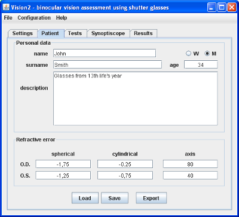

It's good to do introductory interview with patient before examination. Beside basic patient data, examinator should ask about everything that may help to put diagnosis. Program can keep this data with examination results.
All patient data are shown in tab "Patient" (as shown on picture 1). You can change this data everytime while running program. Examination results are presented in tab "Result". You can view results but you can't change them.
One can load, save and export patient data and examination results with the aid of 3 button on the bottom of ,,Patient'' tab:
vis extension). Function available also in menu "File" as "Open"vis extension). Function available also in menu "File".txt extension). Function available also in menu "File".